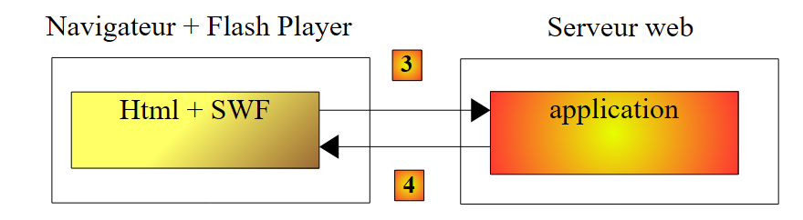
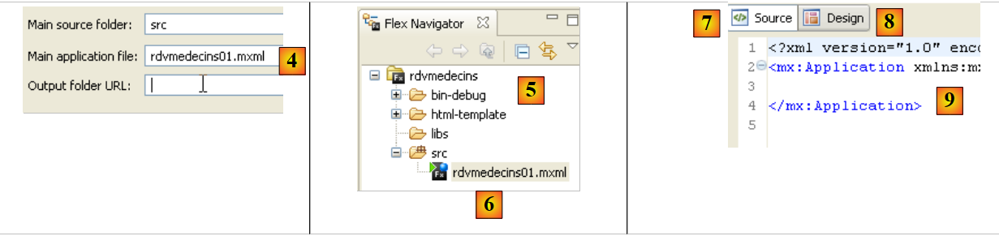
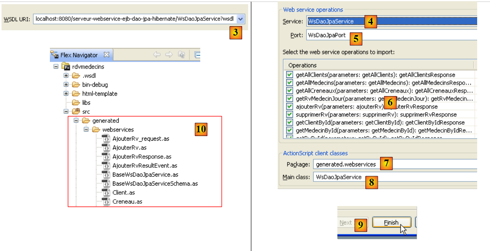
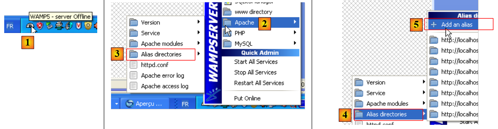
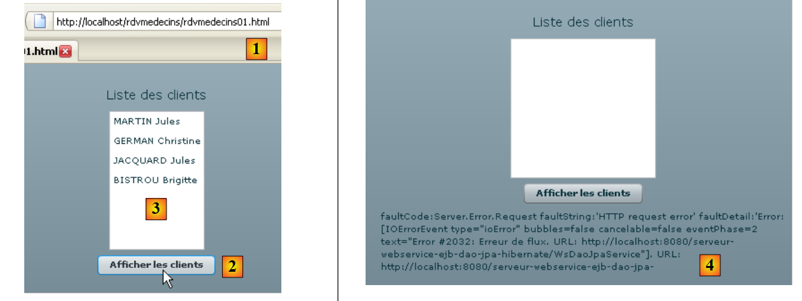
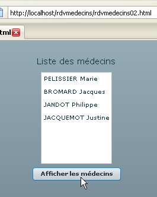

6. عملاء Flex لخدمة المواعيد JEE
نقدم الآن عميلين Flex لخدمة الويب JEE الخاصة بالمواعيد. IDE المستخدم هو Flex Builder 3. يمكن تنزيل نسخة تجريبية من هذا المنتج من الرابط [https://www.adobe.com/cfusion/tdrc/index.cfm?loc=fr_fr&product=flex]. Flex Builder 3 هو بيئة تطوير متكاملة (IDE) من Eclipse. بالإضافة إلى ذلك، لتشغيل عميل Flex، نستخدم خادم ويب Apache من أداة Wamp [http://www.wampserver.com/]. أي خادم Apache سيفي بالغرض. يجب أن يكون متصفح الويب الذي يعرض عميل Flex مزودًا بإصدار Flash Player 9 أو أعلى.
تتميز تطبيقات Flex بأنها تعمل داخل المكون الإضافي Flash Player للمتصفح. وفي هذا الصدد، فهي تشبه تطبيقات Ajax، التي تدمج نصوص JavaScript في الصفحات المرسلة إلى المتصفح، والتي يتم تنفيذها بعد ذلك داخل المتصفح. تطبيق Flex ليس تطبيق ويب بالمعنى المعتاد: إنه تطبيق عميل للخدمات التي تقدمها خوادم الويب. في هذا الصدد، فهو مشابه لتطبيق سطح المكتب الذي يعمل كعميل لهذه الخدمات نفسها. ومع ذلك، فإنه يختلف في جانب واحد: يتم تنزيله مبدئيًا من خادم ويب إلى متصفح مزود بمكوّن Flash Player الإضافي القادر على تشغيله.
مثل تطبيق سطح المكتب، يتكون تطبيق Flex بشكل أساسي من عنصرين:
- طبقة العرض: العروض المعروضة في المتصفح. توفر هذه العروض نفس الثراء الذي توفره نوافذ تطبيقات سطح المكتب. يتم وصف العرض باستخدام لغة ترميز تسمى MXML.
- مكون برمجي يتولى بشكل أساسي معالجة الأحداث التي تطلقها إجراءات المستخدم على العرض. يمكن أيضًا كتابة هذا الكود بلغة MXML أو بلغة موجهة للكائنات تسمى ActionScript. يجب التمييز بين نوعين من الأحداث:
- الأحداث التي تتطلب الاتصال بخادم الويب: ملء قائمة بالبيانات المقدمة من تطبيق ويب، وإرسال بيانات النموذج إلى الخادم، وما إلى ذلك. يوفر Flex عددًا من الطرق للاتصال بالخادم بطريقة شفافة للمطور. هذه الطرق غير متزامنة بشكل افتراضي: يمكن للمستخدم الاستمرار في التفاعل مع العرض أثناء تنفيذ طلب الخادم.
- الأحداث التي تعدل العرض المعروض دون تبادل البيانات مع الخادم، مثل سحب عنصر من شجرة وإفلاته في قائمة. يتم التعامل مع هذا النوع من الأحداث محليًا بالكامل داخل المتصفح.
غالبًا ما يتم تنفيذ تطبيق Flex على النحو التالي:
 |
- في [1]، يتم طلب صفحة HTML
- في [2]، يتم إرسالها. وهي تتضمن ملفًا ثنائيًا SWF (ShockWave Flash) يحتوي على تطبيق Flex بالكامل: جميع طرق العرض ورموز معالجة الأحداث الخاصة بها. سيتم تنفيذ هذا الملف بواسطة المكون الإضافي Flash Player للمتصفح.
 |
- يعمل عميل Flex محليًا في المتصفح إلا عندما يحتاج إلى بيانات خارجية. في هذه الحالة، يطلبها من الخادم [3]. ويستلمها في [4] بتنسيقات مختلفة: XML أو ثنائية. يمكن كتابة التطبيق المطلوب على خادم الويب بأي لغة. ما يهم هو تنسيق الاستجابة فقط.
لقد وصفنا بنية تنفيذ تطبيق Flex حتى يتمكن القارئ من فهم الفرق بوضوح بينه وبين تطبيق الويب التقليدي، بدون Ajax، مثل تطبيق Asp.Net الموصوف سابقًا. في هذا الأخير، يكون المتصفح سلبيًا: فهو يعرض ببساطة صفحات HTML التي تم إنشاؤها على خادم الويب، والذي يرسلها إلى المتصفح.
في الأقسام التالية، نقدم مثالين لعملاء Flex لغرض وحيد هو إظهار تنوع العملاء لخدمة الويب. نظرًا لأن المؤلف نفسه مبتدئ في Flex، فقد لا يتم شرح بعض النقاط بالتفصيل الكافي.
6.1. أول عميل Flex
سنقوم الآن بكتابة أول عميل Flex لعرض قائمة العملاء. وفيما يلي بنية العميل/الخادم التي سنقوم بتنفيذها:
 |
في هذه البنية، يوجد خادمان ويب:
- خادم Glassfish الذي يشغل خدمة الويب البعيدة
- خادم Apache الذي يشغل عميل Flex لخدمة الويب البعيدة
نقوم ببناء عميل Flex باستخدام بيئة تطوير التطبيقات المتكاملة (IDE) Flex Builder 3:
 |
- في Flex Builder 3، قم بإنشاء مشروع جديد في [1]
- ونسميه في [2] ونحدد في [3] المجلد الذي سيتم إنشاؤه فيه
 |
- في [4]، نسمي التطبيق الرئيسي (الذي سيتم تنفيذه)
- في [5]، يظهر المشروع بمجرد إنشائه
- في [6]، ملف MXML الرئيسي للتطبيق
- يحتوي ملف MXML على عرض ورمز معالجة الأحداث لهذا العرض. توفر علامة التبويب [Source] [7] الوصول إلى ملف MXML. ستجد هناك علامات <mx> تصف العرض بالإضافة إلى رمز ActionScript.
- يمكن إنشاء العرض بيانياً باستخدام علامة التبويب [Design] [8]. ثم يتم إنشاء علامات MXML التي تصف العرض تلقائياً في علامة التبويب [Source]. والعكس صحيح أيضاً: علامات MXML المضافة مباشرةً في علامة التبويب [Source] تنعكس بيانياً في علامة التبويب [Design].
كما حدث مع عملاء C# و ASP.NET السابقين، سنقوم بإنشاء الوكيل C المحلي [B] لخدمة الويب البعيدة S [A]:
 |
لكي يتم إنشاء الوكيل C، يجب أن تكون خدمة الويب JEE نشطة.
 |
- في [1]، حدد خيار "البيانات / استيراد خدمة الويب"
- في [2]، حدد المجلد لإنشاء فئات وواجهات الوكيل C.
 |
- في [3]، أدخل عنوان URI لملف WSDL الخاص بخدمة الويب البعيدة S (انظر القسم 4.10.2)، ثم انتقل إلى الخطوة التالية
- في [4] و[5]، خدمة الويب الموصوفة بملف WSDL المحدد في [3]
- في [6]: قائمة الطرق التي سيتم إنشاؤها للوكيل C. لاحظ أن هذه ليست الطرق الفعلية للخدمة S. فهي لا تحتوي على التوقيع الصحيح. هنا، تحتوي كل طريقة مدرجة على معلمة واحدة بغض النظر عن عدد المعلمات في طريقة خدمة الويب الفعلية. هذه المعلمة الواحدة هي مثيل فئة يغلف المعلمات المتوقعة من قبل الطريقة البعيدة في حقولها.
- في [7]: الحزمة التي سيتم فيها إنشاء فئات وواجهات الوكيل C
- في [8]: اسم الفئة المحلية التي ستعمل كوكيل لخدمة الويب البعيدة
- في [9]: إنهاء المعالج.
- في [10]: قائمة الفئات والواجهات للوكيل C الذي تم إنشاؤه.
 |
- في [11]: الفئة [WsDaoJpaService] التي تنفذ أساليب الوكيل C.
تنفذ فئة [WsDaoJpaService] التي تم إنشاؤها واجهة [IWsDaoJpaService] التالية:
/**
* Service.as
* This file was auto-generated from WSDL by the Apache Axis2 generator modified by Adobe
* Any change made to this file will be overwritten when the code is re-generated.
*/
package generated.webservices{
import mx.rpc.AsyncToken;
import flash.utils.ByteArray;
import mx.rpc.soap.types.*;
public interface IWsDaoJpaService
{
//Stub functions for the getAllClients operation
/**
* Call the operation on the server passing in the arguments defined in the WSDL file
* @param getAllClients
* @return An AsyncToken
*/
function getAllClients(getAllClients:GetAllClients):AsyncToken;
....
function getAllClients_send():AsyncToken;
...
function get getAllClients_lastResult():GetAllClientsResponse;
...
function set getAllClients_lastResult(lastResult:GetAllClientsResponse):void;
...
function addgetAllClientsEventListener(listener:Function):void;
...
function get getAllClients_request_var():GetAllClients_request;
...
function set getAllClients_request_var(request:GetAllClients_request):void;
...
}
}
- السطر 11: واجهة [IWsDaoJpaService] التي تنفذها فئة [WsDaoJpaService]
- الأسطر 19–31: الطرق المختلفة التي تم إنشاؤها لطريقة getAllClients() الخاصة بخدمة الويب البعيدة. الطريقة الوحيدة التي تتطابق بشكل وثيق مع تلك التي تعرضها خدمة الويب فعليًا هي تلك الموجودة في السطر 19. لها الاسم الصحيح ولكن ليس التوقيع الصحيح: طريقة getAllClients() الخاصة بخدمة الويب البعيدة لا تحتوي على معلمات.
المعلمة الوحيدة لطريقة getAllClients في الوكيل C الذي تم إنشاؤه هي من النوع GetAllClients التالي:
/**
* GetAllClients.as
* This file was auto-generated from WSDL by the Apache Axis2 generator modified by Adobe
* Any change made to this file will be overwritten when the code is re-generated.
*/
package generated.webservices
{
import mx.utils.ObjectProxy;
import flash.utils.ByteArray;
import mx.rpc.soap.types.*;
/**
* Wrapper class for a operation required type
*/
public class GetAllClients
{
/**
* Constructor, initializes the type class
*/
public function GetAllClients() {}
}
}
هذه فئة فارغة. وقد يرجع ذلك إلى أن الطريقة المستهدفة getAllClients لا تقبل أي معلمات.
الآن دعونا نفحص الفئات التي تم إنشاؤها لكيانات Doctor و Client و Appointment و Time Slot. لنلقِ نظرة، على سبيل المثال، على فئة Client:
package generated.webservices
{
import mx.utils.ObjectProxy;
import flash.utils.ByteArray;
import mx.rpc.soap.types.*;
public class Client extends generated.webservices.Personne
{
public function Client() {}
}
}
فئة Client فارغة أيضًا. وهي مشتقة (السطر 7) من فئة Person التالية:
package generated.webservices
{
import mx.utils.ObjectProxy;
import flash.utils.ByteArray;
import mx.rpc.soap.types.*;
public class Personne
{
public function Personne() {}
public var id:Number;
public var nom:String;
public var prenom:String;
public var titre:String;
public var version:Number;
}
}
- الأسطر 11–15: هذه هي سمات فئة Person المُعرَّفة داخل خدمة الويب JEE.
لدينا الآن العناصر الرئيسية للوكيل C. يمكننا الآن استخدامه.
الملف الرئيسي للعميل [rdvmedecins01.xml] هو كما يلي:
<?xml version="1.0" encoding="utf-8"?>
<mx:Application xmlns:mx="http://www.adobe.com/2006/mxml" layout="vertical" creationComplete="init();">
<mx:Script>
<![CDATA[
import generated.webservices.Client;
...
// données
private var ws:WsDaoJpaService;
[Bindable]
private var clients:ArrayCollection;
private function init():void{
...
}
private function loadClients():void{
...
}
...
private function displayClient(client:Client):String{
...
}
]]>
</mx:Script>
<mx:Label text="Liste des clients" fontSize="14"/>
<mx:List dataProvider="{clients}" labelFunction="displayClient"></mx:List>
<mx:Button label="Afficher les clients" click="loadClients()"/>
<mx:Text id="txtMsgErreur" width="454" height="75"/>
</mx:Application>
في هذا الكود، يجب التمييز بين عدة عناصر:
- تعريف التطبيق (السطر 2)
- وصف طريقة العرض الخاصة به (الأسطر 27–30)
- معالجات أحداث ActionScript داخل العلامة <mx:Script> (الأسطر 3-26).
لنبدأ بمناقشة تعريف التطبيق نفسه ووصف واجهته:
- السطر 2: يحدد
- تخطيط المكونات داخل حاوية العرض. تشير السمة layout="vertical" إلى أن المكونات سيتم ترتيبها واحدة أسفل الأخرى.
- الطريقة التي سيتم تنفيذها عند إنشاء مثيل للواجهة، أي عند إنشاء مثيل لجميع مكوناتها. تشير السمة creationComplete="init();" إلى أنه يجب تنفيذ الطريقة init الموجودة في السطر 13. creationComplete هي أحد الأحداث التي يمكن لفئة Application إصدارها.
- تحدد الأسطر 27-30 مكونات العرض
- السطر 27: يحدد نصًا
- السطر 28: قائمة ستحتوي على قائمة العملاء. تحدد العلامة dataProvider="{clients}" مصدر البيانات الذي سيملأ القائمة. هنا، سيتم ملء القائمة بكائن العملاء المحدد في السطر 11. لكي تتمكن من كتابة dataProvider="{clients}"، يجب أن يحتوي حقل العملاء على السمة [Bindable] (السطر 10). تسمح هذه السمة بالإشارة إلى متغير ActionScript خارج علامة <mx:Script>. حقل clients هو من نوع ArrayCollection، وهو نوع ActionScript يسمح لك بتخزين قوائم الكائنات—في هذه الحالة، قائمة كائنات من نوع Client.
- السطر 29: زر. يتم التعامل مع حدث النقر عليه. تشير السمة click="loadClients()" إلى أنه يجب تنفيذ الأسلوب loadClients الموجود في السطر 17 عند النقر على الزر. سيؤدي هذا الزر إلى تشغيل الطلب الموجه إلى خدمة الويب للحصول على قائمة العملاء.
- السطر 30: مربع نص مخصص لعرض أي رسالة خطأ قد يرد بها الخادم استجابةً للطلب السابق.
تُنشئ الأسطر 27-30 العرض التالي في علامة التبويب [التصميم]:
 |
- [1]: تم إنشاؤه بواسطة مكون Label في السطر 27
- [2]: تم إنشاؤه بواسطة مكون List في السطر 28
- [3]: تم إنشاؤه بواسطة مكون Button في السطر 29
- [4]: تم إنشاؤه بواسطة مكون Text في السطر 30
- [5]: مثال على التنفيذ
دعونا الآن نفحص كود ActionScript الخاص بالصفحة. يتولى هذا الكود معالجة أحداث العرض.
<mx:Application xmlns:mx="http://www.adobe.com/2006/mxml" layout="vertical" creationComplete="init();">
<mx:Script>
<![CDATA[
import generated.webservices.Client;
...
// données
private var ws:WsDaoJpaService;
[Bindable]
private var clients:ArrayCollection;
private function init():void{
// on instancie le proxy du service web
ws=new WsDaoJpaService();
// on configure les gestionnaires d'évts
ws.addgetAllClientsEventListener(loadClientsCompleted);
ws.addEventListener(FaultEvent.FAULT,loadClientsFault);
}
private function loadClients():void{
// on demande la liste des clients
ws.getAllClients(new GetAllClients());
}
private function loadClientsCompleted(event:GetAllClientsResultEvent):void{
// on récupère les clients dans le résultat envoyé
clients=event.result as ArrayCollection;
}
private function loadClientsFault(event:FaultEvent):void{
// on affiche le msg d'erreur
txtMsgErreur.text=event.fault.message;
}
private function displayClient(client:Client):String{
// on affiche un client
return client.nom + " " + client.prenom;
}
]]>
</mx:Script>
<mx:Label text="Liste des clients" fontSize="14"/>
<mx:List dataProvider="{clients}" labelFunction="displayClient"></mx:List>
<mx:Button label="Afficher les clients" click="loadClients()"/>
<mx:Text id="txtMsgErreur" width="454" height="75"/>
- السطر 9: يشير ws إلى الوكيل C من النوع WsDaoJpaService، وهو الفئة التي تم إنشاؤها مسبقًا والتي تنفذ الطرق للوصول إلى خدمة الويب البعيدة.
- السطر 13: يتم تنفيذ طريقة init عند إنشاء مثيل العرض (السطر 1)
- السطر 15: يتم إنشاء مثيل للوكيل C
- السطر 17: يتم ربط معالج الأحداث بالحدث "اكتملت الطريقة غير المتزامنة GetAllClients بنجاح". بالنسبة لأي طريقة m في خدمة الويب البعيدة، يقوم الوكيل C بتنفيذ طريقة addmEventListener التي تسمح بربط معالج الأحداث بالحدث "اكتملت الطريقة غير المتزامنة m بنجاح". هنا، يشير السطر 17 إلى أنه يجب تنفيذ الطريقة loadClientsCompleted في السطر 26 عندما يتلقى عميل Flex قائمة العملاء.
- السطر 18: معالج الأحداث مرتبط بالحدث "اكتملت طريقة غير متزامنة للوكيل C بفشل". هنا، يشير السطر 18 إلى أنه يجب تنفيذ طريقة loadClientsFault في السطر 31 كلما فشل طلب غير متزامن من الوكيل C إلى خدمة الويب S. هنا، الطلب الوحيد الذي سيتم إجراؤه هو الطلب الذي يطلب قائمة العملاء.
- في النهاية، قامت طريقة init في السطر 13 بإنشاء مثيل للوكيل C وتحديد معالجات الأحداث للطلب غير المتزامن الذي سيتم إجراؤه لاحقًا.
- السطر 21: الطريقة التي يتم تنفيذها عند النقر فوق الزر [Display Clients] (السطر 44)
- السطر 23: يتم تنفيذ طريقة getAllClients غير المتزامنة للوكيل C. يتم تمرير مثيل GetAllClients المسؤول عن تغليف معلمات الطريقة البعيدة التي تم استدعاؤها. هنا، لا توجد معلمات. يتم إنشاء مثيل فارغ. طريقة getAllClients غير متزامنة. يستمر التنفيذ دون انتظار البيانات التي يعيدها الخادم. على وجه الخصوص، يمكن للمستخدم الاستمرار في التفاعل مع العرض. سيستمر التعامل مع الأحداث التي يطلقها المستخدم. بفضل طريقة init، نعلم أن:
- سيتم تنفيذ طريقة loadClientsCompleted (السطر 26) عندما يتلقى عميل Flex قائمة العملاء
- سيتم تنفيذ طريقة loadClientsFault (السطر 31) إذا انتهى الطلب بخطأ.
- السطر 28: يتم استرداد قائمة العملاء من الحدث. نعلم أن طريقة getAllClients الخاصة بخدمة الويب البعيدة تُرجع قائمة. نضع هذه القائمة في حقل clients في السطر 11. يلزم إجراء تحويل نوع. نظرًا لأن القائمة في السطر 43 مرتبطة بحقل clients، يتم إخطارها بأن بياناتها قد تغيرت. ثم تعرض قائمة العملاء. ستعرض كل عنصر في قائمة العملاء باستخدام طريقة displayClient (السطر 43).
- السطر 36: تأخذ طريقة displayClient نوع Client. يجب أن تُرجع السلسلة التي يجب أن تعرضها القائمة لهذا العميل. هنا، الاسم الأول واسم العائلة (السطر 38).
- السطر 31: الطريقة التي يتم تنفيذها عند فشل طلب إلى خدمة الويب. تتلقى معلمة من نوع FaultEvent. تحتوي هذه الفئة على حقل `fault` الذي يغلف الخطأ الذي أعاده الخادم. `fault.message` هي الرسالة المصاحبة للخطأ.
- السطر 33: يتم عرض رسالة الخطأ في مربع النص المخصص لهذا الغرض.
بمجرد إنشاء التطبيق، يوجد الكود القابل للتنفيذ في مجلد [bin-debug] الخاص بمشروع Flex:
 |
أعلاه،
- يمثل الملف [rdvmedecins01.html] ملف HTML الذي سيطلبه المتصفح من خادم الويب للحصول على عميل Flex
- الملف [rdvmedecins01.swf] هو الملف الثنائي لعميل Flex الذي سيتم تضمينه في صفحة HTML المرسلة إلى المتصفح ثم تنفيذه بواسطة مكون Flash Player الإضافي للمتصفح.
نحن جاهزون لتشغيل عميل Flex. أولاً، نحتاج إلى إعداد بيئة التشغيل المطلوبة له. لنعد إلى بنية العميل/الخادم التي اختبرناها:
 |
جانب الخادم:
- بدء تشغيل نظام إدارة قواعد البيانات MySQL
- قم بتشغيل خادم GlassFish
- نشر خدمة الويب JEE الخاصة بالمواعيد إذا لم تكن قد نُشرت بالفعل
- اختياريًا، اختبر أحد العملاء السابقين للتحقق من أن كل شيء في مكانه على جانب الخادم.
جانب العميل:
ابدأ تشغيل خادم Apache الذي سيستضيف تطبيق Flex. نستخدم هنا أداة Wamp. باستخدام هذه الأداة، يمكننا تعيين اسم مستعار لمجلد [bin-debug] الخاص بمشروع Flex.
 |
- يوجد رمز Wamp في أسفل الشاشة [1]
- انقر بزر الفأرة الأيسر على أيقونة Wamp، واختر خيار Apache [2] / Alias Directories [3, 4]
- اختر الخيار [5]: Add an alias
 |
- في [6]، قم بتعيين اسم مستعار (أي اسم) لتطبيق الويب الذي سيتم تنفيذه
- في [7]، حدد جذر تطبيق الويب الذي سيستخدم هذا الاسم المستعار: وهو المجلد [bin-debug] لمشروع Flex الذي أنشأناه للتو.
دعونا نستعرض بنية مجلد [bin-debug] في مشروع Flex:
 |
ملف [rdvmedecins01.html] هو ملف HTML لتطبيق Flex. بفضل الاسم المستعار الذي أنشأناه للتو لمجلد [bin-debug]، يمكن الوصول إلى هذا الملف عبر عنوان URL [http://localhost/rdvmedecins/rdvmedecins01.html]. نصل إلى عنوان URL هذا في متصفح مزود بمكوّن Flash Player الإضافي الإصدار 9 أو أعلى:
 |
- في [1]، عنوان URL لتطبيق Flex
- في [2]، نطلب قائمة العملاء
- في [3]، النتيجة التي تم الحصول عليها عندما يعمل كل شيء بشكل صحيح
- في [4]، النتيجة التي تم الحصول عليها عند طلب قائمة العملاء على الرغم من توقف خدمة الويب.
قد تكون مهتمًا بمشاهدة شفرة المصدر لصفحة HTML المستلمة
يبدأ نص الصفحة في السطر 39. ولا يحتوي على HTML قياسي بل على كائن (السطر 47) من النوع "application/x-shockwave-flash" (السطر 60). هذا هو الملف [rdvmedecins01.swf] (السطر 54) الذي يمكن العثور عليه في مجلد [bin-debug] لمشروع Flex. وهو ملف كبير الحجم: حوالي 600 كيلوبايت لهذا المثال البسيط.
6.2. عميل Flex ثانٍ
لن يستخدم عميل Flex الثاني الوكيل C الذي تم إنشاؤه للعميل الأول. نريد أن نوضح أن هذه الخطوة ليست ضرورية، على الرغم من أنها تقدم مزايا مقارنة بالنهج الذي سنقدمه هنا.
يتطور المشروع على النحو التالي:
 |
- في [1] تطبيق Flex الجديد
- في [2] الملفات التنفيذية المرتبطة
- في [3] العرض الجديد: سنعرض قائمة الأطباء.
فيما يلي كود MXML الخاص بالتطبيق [rdvmedecins02.mxml]:
<?xml version="1.0" encoding="utf-8"?>
<mx:Application xmlns:mx="http://www.adobe.com/2006/mxml" layout="vertical">
<mx:Script>
<![CDATA[
import mx.rpc.events.ResultEvent;
import mx.rpc.events.FaultEvent;
import mx.collections.ArrayCollection;
// données
[Bindable]
private var medecins:ArrayCollection;
private function loadMedecins():void{
// on demande la liste des médecins
wsrdvmedecins.getAllMedecins.send();
}
private function loadMedecinsCompleted(event:ResultEvent):void{
// on récupère les médecins
medecins=event.result as ArrayCollection;
}
private function loadMedecinsFault(event:FaultEvent):void{
// on affiche le msg d'erreur
txtMsgErreur.text=event.fault.message;
}
// affichage d'un médecin
private function displayMedecin(medecin:Object):String{
return medecin.nom + " " + medecin.prenom;
}
]]>
</mx:Script>
<mx:WebService id="wsrdvmedecins"
wsdl="http://localhost:8080/serveur-webservice-ejb-dao-jpa-hibernate/WsDaoJpaService?wsdl">
<mx:operation name="getAllMedecins"
result="loadMedecinsCompleted(event)" fault="loadMedecinsFault(event);">
<mx:request/>
</mx:operation>
</mx:WebService>
<mx:Label text="Liste des médecins" fontSize="14"/>
<mx:List dataProvider="{medecins}" labelFunction="displayMedecin"></mx:List>
<mx:Button label="Afficher les médecins" click="loadMedecins()"/>
<mx:Text id="txtMsgErreur" width="300" height="113"/>
</mx:Application>
سنعلق فقط على الميزات الجديدة:
- الأسطر 42–45: العرض الجديد. وهو مطابق للعرض السابق باستثناء أنه تم تكييفه لعرض الأطباء بدلاً من العملاء.
- الأسطر 35–41: يتم وصف خدمة الويب هنا بواسطة علامة <mx:WebService> (السطر 35). لم يعد الوكيل C المستخدم في الإصدار السابق مستخدمًا هنا.
- السطر 35: تعطي سمة id اسمًا لخدمة الويب.
- السطر 36: تحدد السمة wsdl عنوان URI لملف WSDL الخاص بخدمة الويب. وهو نفس عنوان URI الذي استخدمه العميل السابق والمحدد في القسم 4.10.2.
- الأسطر 37-40: تحدد طريقة لخدمة الويب البعيدة باستخدام علامة <mx:operation>
- السطر 37: يتم تعريف الطريقة المشار إليها بواسطة السمة name. هنا نشير إلى الطريقة البعيدة getAllMedecins.
- السطر 38: نحدد الطرق التي سيتم تنفيذها في حالة نجاح العملية (سمة result) وفي حالة فشلها (سمة fault).
- السطر 39: تُستخدم علامة <mx:request> لتعريف معلمات العملية. هنا، لا تحتوي الطريقة البعيدة getAllMedecins على معلمات، لذا نتركها فارغة. بالنسبة لطريقة تقبل المعلمات param1 و param2، سنكتب:
حيث param1 و param2 هما متغيران تم إعلانهما وتهيئتهما داخل علامة <mx:Script>
داخل علامة <mx:Script>، يوجد كود ActionScript مشابه لذلك الذي تمت دراسته في العميل السابق. والفرق الوحيد هو طريقة loadMedecins في الأسطر 13–16. والفرق يكمن في طريقة استدعاء الطريقة البعيدة [getAllMedecins]:
- السطر 15: نستخدم خدمة الويب [wsrdvmedecins] المحددة في السطر 35 وعملية [getAllMedecins] المحددة في السطر 37. لتنفيذ هذه العملية، يتم استخدام طريقة send. وهي تبدأ الاستدعاء غير المتزامن لطريقة getAllMedecins لخدمة الويب المحددة في السطر 35. ستقوم طريقة send بإجراء الاستدعاء باستخدام المعلمات المحددة بواسطة العلامة <mx:request> في السطر 39. هنا، لا توجد معلمات. إذا كانت الطريقة تحتوي على المعلمتين param1 و param2، لكان البرنامج النصي loadMedecins قد عيّن قيمًا لهذه المعلمات قبل استدعاء طريقة send.
كل ما تبقى هو اختبار هذا التطبيق الجديد:
 |